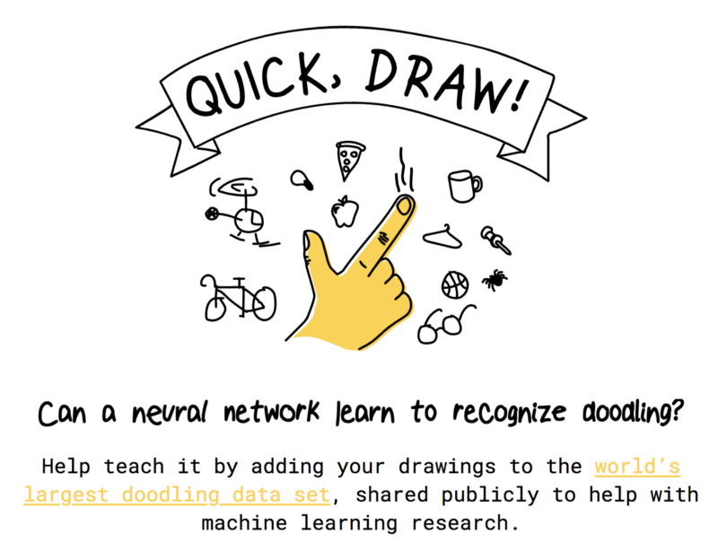
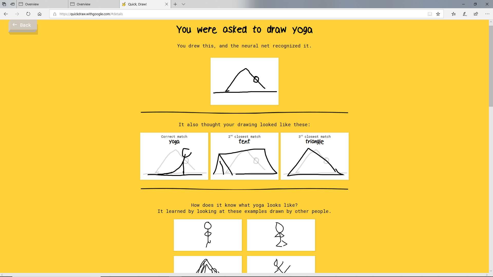

Are your drawing skills good enough to be recognized by google?
Are we good enough to build a program to recognize your drawings?
Google’s internet game QuickDraw prompts players to draw a given object. Such objects include an apple, a kangaroo, or the Eiffel Tower. You can play the game here: https://quickdraw.withgoogle.com. As the player draws the object, Google attempts to guess what the user is drawing. In fact, Google uses user-supplied doodles to train an object recognition algorithm. Google has released some of the doodle data, and has opened up a Kaggle competition for teams to submit their own algorithms. The goal of competing teams is to produce an algorithm that classifies doodles in a test set.
How do you draw yoga?

As you can see, google recognized your image by comparing it to others of similar nature. This is what we tried to replicate! Some of the drawings can be really abstract, like animal migration.
If you want to try also, download the data from here. The files can be quite large so we recommend using the simplified version unless you have access to cloud storage
We took two approaches, a statistical approach (see here and here) and a machine learning approach (see here) to build two algorithms to classify food images. Yum!